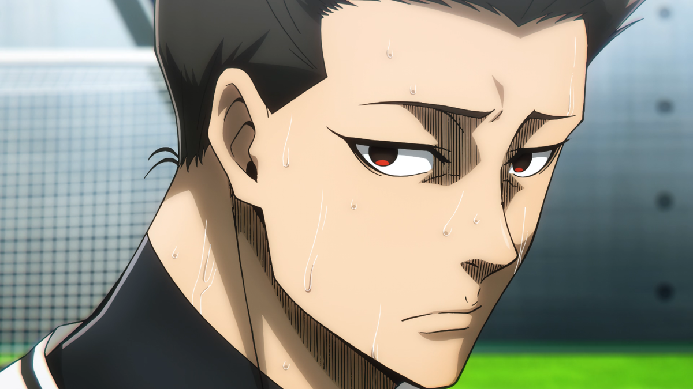
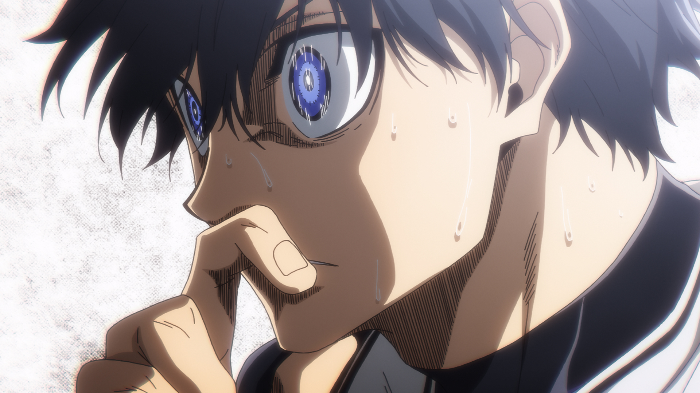

Blue Lock

Kiadás: 2022-10-09
Tipus: Sorozat
Fordító: Muteki Fansub
Részek: 24/24
Státusz: Befejezett
Leírás
Blue Lock egy izgalmas anime, amely a focira összpontosít. Az anime középpontjában egy különleges edzőprogram áll, amelynek célja, hogy megtalálja Japán legjobb támadóját. A történet során fiatal focisták versengenek egymással, hogy bebizonyítsák tehetségüket és elérjék a céljaikat. A Blue Lock nemcsak a sportteljesítményekre, hanem a karakterek fejlődésére és a csapatdinamika bemutatására is fókuszál, bemutatva a sport világának kihívásait és örömeit.
Részek
-
 1. Rész
1. Rész
- 2. Rész
-  3. Rész
- 4. Rész
- 5. Rész
- 6. Rész
- 7. Rész
- 8. Rész
- 9. Rész
-
 10. Rész
10. Rész
- 11. Rész
- 12. Rész
- 13. Rész
- 14. Rész
-  15. Rész
- 16. Rész
- 17. Rész
- 18. Rész
- 19. Rész
- 20. Rész
- 21. Rész
- 22. Rész
- 23. Rész
- 24. Rész